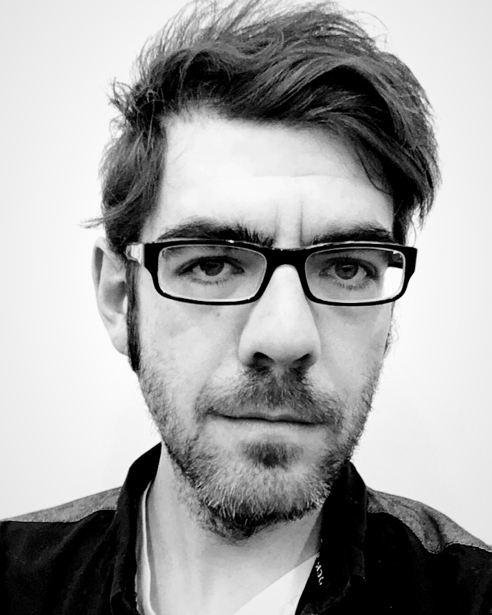

About
Michael Thomas Smith
I’m Michael Thomas Smith, a writer and teacher living in the Chicago area.
I write poetry, short stories, plays, and nonfiction. My work has appeared in literary magazines and journals, and I’ve also written for the stage. Some of my plays have been performed in Chicago and at the Last Frontier Theatre Festival in Alaska.
I have a PhD in English from Purdue University and have spent much of my career teaching writing, literature, and related subjects. I’ve taught in the United States and abroad and have designed courses and educational programs along the way.
This site is mostly a place for the writing. You’ll find poetry, stories, plays, books, talks, and some of my academic work here. The poetry archive includes several hundred poems, from early publications to work appearing in journals now.
Thanks for stopping by.